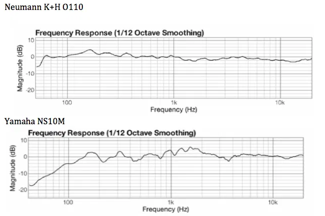
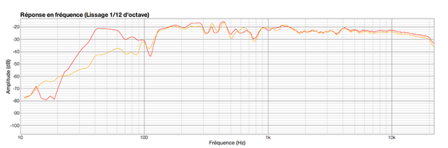
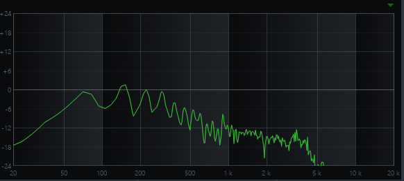
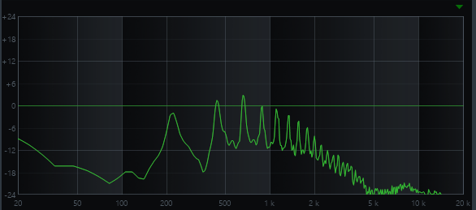

Принципы обработки и воспроизведения звука
Что мы знаем о звуке
- Звук
- - это колеблющаяся продольная волна, состоящая из уплотнений и разряжений воздуха.
- Амплитуда
- - это максимальное смещение от положения равновесия.
- Частота колебаний
- - это характеристика определяющая высоту воспринимаемого звука. Высота звука измеряется в герцах (Гц, Hz) или килогерцах (кГц, kHz). 1 Гц = 1(с)−1. То есть колебание в 1 Гц соответствует волне с периодом в 1 секунду.
Распространение звука происходит в упругих средах (воздух, вода, различные металлы) с конечной скоростью. Например, в воздухе при 20 °C она составляет 343 м/с и в целом увеличивается вместе с ростом упругости среды.
Психоакустика. Важный момент: восприятие громкости, которую мы вроде бы так явно и объективно слышим, на самом деле зависит от частоты и уровня звукового давления. Это изменение восприятия графически представлено на кривой Флетчера — Мэнсона.
Эффективно воспроизводимый (рабочий) диапазон частот (Frequency response) — диапазон, в пределах которого уровень звукового давления, развиваемого акустической системой, не ниже заданной величины по отношению к уровню, усредненному в определенной полосе частот.
График такой амплитудно-частотной характеристики называется АЧХ. Любая воспроизводящая или звукоснимающая аудиосистема имеет свою уникальную АЧХ. Производители лучших мониторов для выявления мельчайших недостатков звука борются за самую ровную линию АЧХ. Это позволяет получить максимально достоверный звук, а не приятный, как может показаться неопытным слушателям.

А это график полной АЧХ на слышимом диапазоне весьма популярных Focal SM9. На нем хорошо видны провалы в области 110 Гц. Обычно в этом месте собирается басовая грязь
Идем дальше.
Тембром называют окраску звука. Дело в том, что любое звуковое колебание состоит из набора, а если еще точнее — спектра отдельных колебаний. Обычно мы делим спектр колебаний на основной тон, определяющий ноту, которую мы играем, а также обертона и дополнительные колебания. Тембр зависит от того, какие звуковые колебания воспроизводятся кроме основного тона. Именно воспроизведение дополнительных колебаний характеризует нюансы звучания голоса или инструмента.
Так выглядит тембр великолепного баса Warwick $$ corvette NT, пропущенный через Ampeg SVT-3 Pro и снятый на Shure 57. Тембр сочетает в себе АЧХ всех этих инструментов и, конечно же, пульта
А это тембр тромбона, записанный через классический Shure 57. Тут немалое значение также играет комната, в которой вели запись. Самые важные всплески — обертона, которые умножают основную частоту на число, кратное 2. Они задают музыкальный тон.
Обработка звукового сигнала
Амплитудные преобразования (динамическая обработка). Их можно выполнить двумя методами: умножая амплитуду сигнала на некоторое постоянное число, в результате чего на всей его протяженности получится одинаковое изменение интенсивности сигнала, либо изменяя амплитуду сигнала по какому-то закону, то есть умножая ее на модулирующую функцию. Последний процесс называется амплитудной модуляцией.
Частотные (спектральные) преобразования, или частотная обработка. Сигнал представляет из себя ряд Фурье, то есть состоит из простейших синусоидальных колебаний разных частот и амплитуд. Затем идет обработка его частотных составляющих (например, фильтрация) и обратная свертка. В отличие от динамической обработки, этот процесс значительно более сложный в исполнении, так как разложение звука на простейшие синусоидальные колебания — очень трудоемкая задача.
Фазовые преобразования. Являют собой постоянный сдвиг фазы сигнала либо наложение некоторой фазомодулирующей функции. Такие преобразования, например стереосигнала, позволяют реализовать эффект вращения или «объемности» звука. Любопытно, что при сведении фазовые преобразования играют весьма большую роль: если наложить пики двух одинаковых сигналов, отраженных на 180°, то сигнал полностью исчезнет. Почти то же самое произойдет, если наложить две волны с неполным смещением фазы, с одним отличием: в этом случае сигнал сохранится, но его звучание значительно оскудеет.
Временны́е преобразования (реверберация и дилэй). Их производят наложением на сигнал одной или нескольких его копий, сдвинутых во времени. Таким образом появляются эффекты эха или хора. Временные преобразования влияют на пространственные характеристики звука, именно с их помощью вы можете почувствовать себя на олимпийском стадионе, сидя в маленькой каморке.
Формантные преобразования. Выполняют над формантами — усиленными участками спектра звука. Применительно к звуку, сформированному речевым аппаратом человека, изменяя параметры формант, фактически можно изменять восприятие тембра и высоты голоса.
Динамическая обработка звука. Под динамической обработкой звука понимают как простое увеличение громкости композиции, так и сужение и расширение динамического диапазона, при котором одни звуки понижают свою громкость, а другие, наоборот, становятся более громкими.